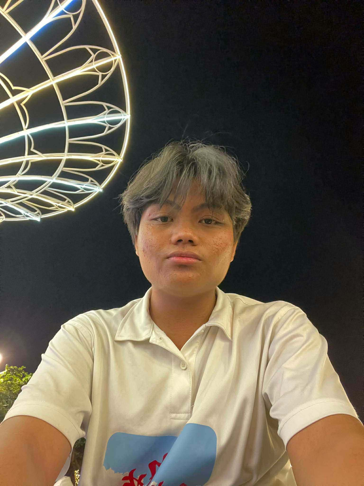
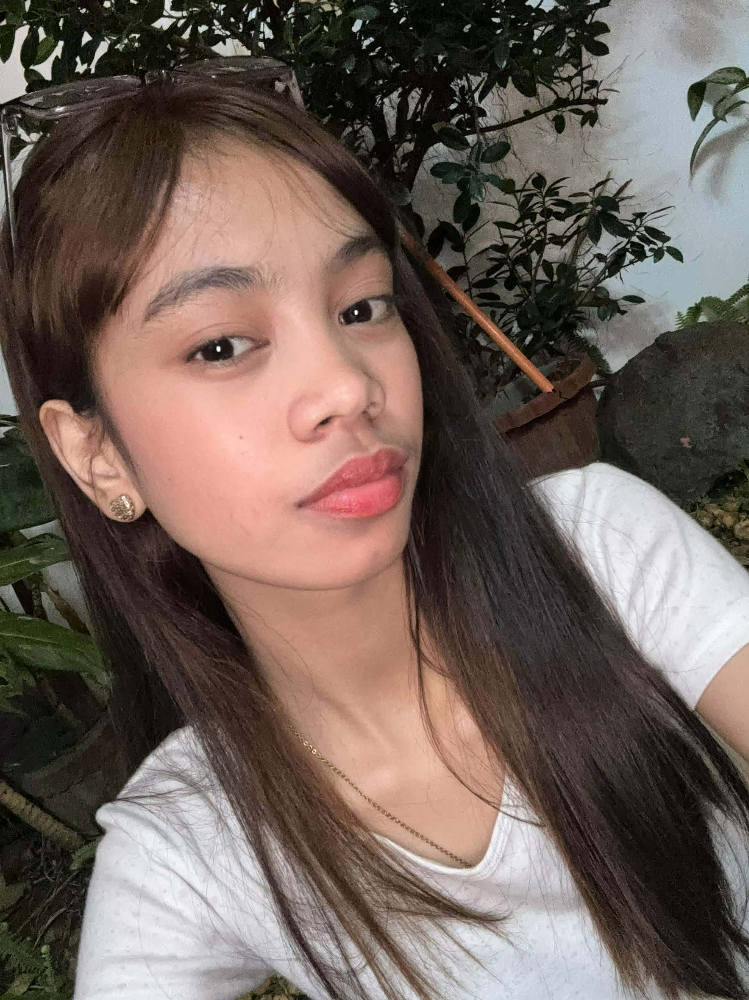
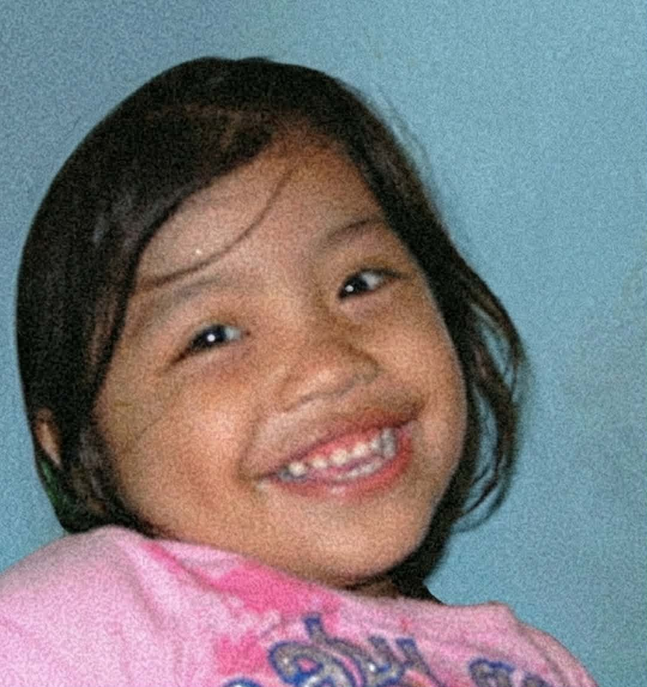
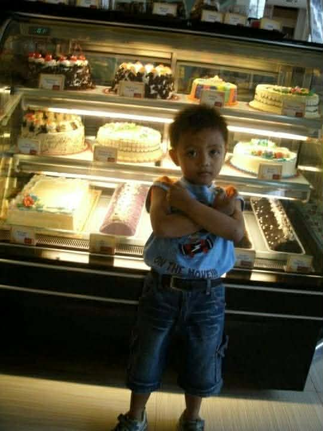

Mary Jane Cabatingan
Rhian Joyce Villaceran
Darwin Labador

Cyrus Balmedina

Welcome to our group page



My name is Mary Jane Cabatingan, a 19-year-old student and currently living in Tunasan, Muntinlupa City. I was born on November 21, 2006. In my free time, i enjoy reading story books, watching movies, and listening to music. I also love singing, as it allows me to express my emotions and feelings.
I am 18 years old, born on July 26, 2007, and I live in Marquez Compound, Summitville, Putatan, Muntinlupa City. One of my favorite ways to spend time is by listening to music, which inspires me and helps me relax after a busy day. I enjoy connecting with people and sharing experiences, and I can be reached through my email at villaceranrhianjoyce41@gmail.com or by phone at 0906-501-7800. I value simple moments in life and believe that each day is an opportunity to learn, grow, and enjoy the little things that bring joy.
My name is Darwin, and I am 23 years old, born on December 10, 2002. I live at Km 23 West Service Road, Arevalo Compound, Alabang, Muntinlupa City. One of my favorite hobbies is watching movies, which allows me to relax, enjoy different stories, and explore new ideas. I enjoy spending my free time discovering films of various genres and look forward to experiencing more memorable stories in the future.

My name is Cyrus, and I am 19 years old, born on October 21, 2006. I live at 282 Arandia Street, Tunasan, Muntinlupa City. One of my favorite hobbies is playing online games, which allows me to have fun, challenge myself, and connect with friends. I enjoy spending my free time exploring new games and improving my skills, and I look forward to learning and growing in the years ahead.
My name is Jhanna Rhian C. Sablon, 18 years old, and I live in Putatan, Muntinlupa City. I was born on August 5, 2007. I’m someone who enjoys simple things like watching k-drama, and listening to music. these hobbies help me relax and enjoy life.